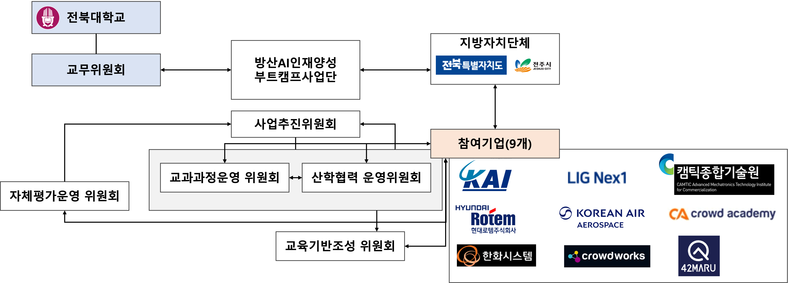
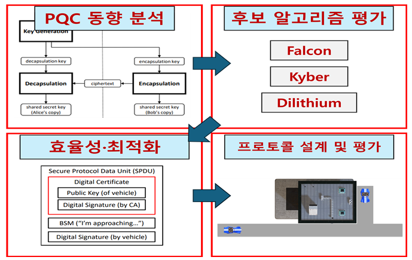

Projects
Active Research Projects

Advanced Industry Talent Cultivation Boot Camp (Defense AI Field)
This project focuses on cultivating specialized talent for the defense industry's transition to AI. Our lab participates in developing and operating immersive educational tracks—including Micro-Degrees and advanced intensives—in key areas such as Defense AI-driven Autonomous Systems, Cyber Security, and Logistics AX. Through close collaboration with leading defense companies (e.g., LIG Nex1, Hanwha Systems, KAI), we provide industry-coupled training and field internships to bridge the gap between academia and the advanced defense sector.

Study on the Application and Practical Implementation of Post-Quantum Cryptography for the Post-Quantum Era
In response to the potential vulnerability of existing public-key cryptosystems due to advancements in quantum computing, our lab explores practical implementation strategies for Post-Quantum Cryptography (PQC). Specifically, we conduct research on lightweight optimization and protocol design to ensure the efficient operation of NIST standard algorithms (e.g., Kyber, Dilithium) within resource-constrained defense and industrial environments, such as satellites, drones, and IoT.
Ongoing Research Directions
Our lab is actively pursuing various government and defense research proposals, striving to secure next-generation security technologies.